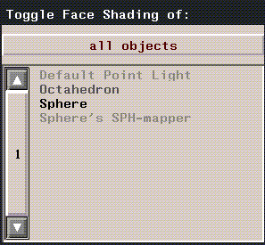
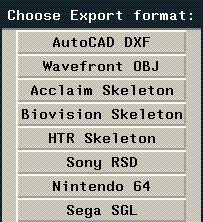
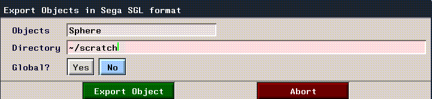

This section describes the procedures for exporting object data from N-World to Sega Saturn SGL files. It also includes a brief section describing how to compile and view these files.
Using Saturn Express Hardware Requirements
In addition to a Sega Saturn, the Saturn Express requires a Sega CartDev, Rev. B.
Capabilities
Saturn Express supports conversion of game content data for real-time display on the Sega Saturn. This includes:
Saturn Express Parameters
Saturn Express has the following parameters for object and texture map data:
1. Model your objects in N-Geometry.
2. Create materials in the Attributes Editor.
4. Redisplay your 3D object in N·World in real time, using the SGI GL Shade hardware renderer.
Preview vs. Export
When you preview an object or an animation, the data are compiled and sent to the Nintendo directly When you export an object, the data are written to ASCII text files, which can then be compiled and sent to the Sega Saturn.
Previewing an Object on the Sega Saturn A Note about Tutorial Files
We'll be loading files from N·World demo directories during the course of this tutorial. When N·World is distributed, these directories are generally write-protected. This means that you might not be able to save your materials or other files to these directories. When you are saving objects, materials, or other items, make sure to specify a directory for which you have adequate write permissions (your home directory, symbolized with a tilde (~) is often a good choice). If you have any questions about the configuration of your particular site, consult your System Administrator.
Setting up the Viewer
Output from the Sega Saturn can be channelled to an SGI Capture window. Of course, you can also send output to a TV monitor.
1. Open a UNIX shell and type in the following command.
unix%capture &3. Change the Default In: parameter to Analog Source.
2. In the GeoMenus, (CLICK-L) on New Object>mapper.
3. In the GeoMenus, (CLICK-L) on Shading, then select your object from the menu which appears.

4. Open the Browser, then (CLICK-L) on the Geo button.
5. In the Browser, (CLICK-R) over your object.
6. (CLICK-L) on Assign Mapper.
7. Open the Attributes Editor.
8. (CLICK-L) on New to create a new material.
9. (CLICK-L) on the Sega button.
11. (CLICK-L) on the Texture Map field, and select the following texture map file:
/usr/local/ngc/presets/maps/Green_snake_B.tpx14. (CLICK-R) on the Mapper field, then (CLICK-L) on the Spherical mapper you created in step 2.
15. In the Attributes Editor, (CLICK-L) on Redisplay.
When you export an object from N-Geometry to Sega SGL format, all materials you associated with that object in the Browser are exported as well. Be sure that you've assigned materials to your objects before exporting them. To learn how to assign materials to objects and face parts, see the Attributes Editor User's Guide.
Exporting an Object
1. (Click-L) on Export in the GeoMenu.
2. Choose the object you want to export from the object list that appears.
3. Choose Sega SGL from the Choose Export Format pop-up menu.


5. (Click-L) on Write Object File.
Sphere.c
Sphere.h
octahedron_texture.c
1. Copy the following files into the directory where you want to compile the files:
/usr/local/ngc/plugin/sega/Makefile
ln -s /usr/local/bin/sh-hms-ld ld
SRCS = octahedron-main.c octahedron-polygon.c octahedron-texture.c
set path=($path /usr/local/bin)makenichimen.cof
On the SGI
1. Evaluate the following LISP forms after you have evaluated (sega:start-sega) or have evaluated (sega:Segafy) at least once during the current session.
(sega:load-coff "/directory/nichimen.cof" t)
Sample Files
POLYGON.C File
Write xyz coordinates for all vertices:
POINT point_cube[] = {POStoFIXED(-15.0,-15.0,-15.0),
POStoFIXED(-15.0,-15.0, 15.0),
POStoFIXED(-15.0, 15.0,-15.0),
POStoFIXED(-15.0, 15.0, 15.0),
POStoFIXED( 15.0,-15.0,-15.0),
POStoFIXED( 15.0,-15.0, 15.0),
POStoFIXED( 15.0, 15.0,-15.0),
POStoFIXED( 15.0, 15.0, 15.0),
};
POLYGON polygon_cube[] = {NORMAL(-1.0, 0.0, 0.0), VERTICES(0,1,3,2),
NORMAL( 0.0, 0.0, 1.0), VERTICES(1,5,7,3),
NORMAL( 1.0, 0.0, 0.0), VERTICES(5,4,6,7),
NORMAL( 0.0, 0.0,-1.0), VERTICES(4,0,2,6),
NORMAL( 0.0,-1.0, 0.0), VERTICES(4,5,1,0),
NORMAL( 0.0, 1.0, 0.0), VERTICES(2,3,7,6),
};
ATTR attribute_cube[] = {ATTRIBUTE(Single_Plane,SORT_MIN,No_Texture,C_RGB(31,31,00),
No_Gouraud,MESHoff,sprPolygon,UseLight),ATTRIBUTE(Single_Plane,SORT_MIN,No_Texture,C_RGB(31,00,00),
No_Gouraud,MESHoff,sprPolygon,UseLight),ATTRIBUTE(Single_Plane,SORT_MIN,No_Texture,C_RGB(00,31,00),
No_Gouraud,MESHoff,sprPolygon,UseLight),ATTRIBUTE(Single_Plane,SORT_MIN,No_Texture,C_RGB(00,00,31),
No_Gouraud,MESHoff,sprPolygon,UseLight),ATTRIBUTE(Single_Plane,SORT_MIN,No_Texture,C_RGB(31,00,31),
No_Gouraud,MESHoff,sprPolygon,UseLight),ATTRIBUTE(Single_Plane,SORT_MIN,No_Texture,C_RGB(00,31,31),
No_Gouraud,MESHoff,sprPolygon,UseLight),};
PDATA PD_cube = {point_cube,sizeof(point_cube)/sizeof(POINT),
polygon_cube,sizeof(polygon_cube)/sizeof(POLYGON),
attribute_cube
};
Texture Example (POLYGON.C)
#include "sgl.h"
#define PN_SONIC 0
#define PN_AM2 1
POINT point_plane[] = { POStoFIXED(-40.0 , -40.0 , 0.0) ,
POStoFIXED( 40.0 , -40.0 , 0.0) ,
POStoFIXED( 40.0 , 40.0 , 0.0) ,
POStoFIXED(-40.0 , 40.0 , 0.0)
};
POLYGON polygon_plane[] = { NORMAL(0.0,0.0,1.0), VERTICES(0 , 1 , 2 , 3)
};
ATTR attribute_plane[] = { ATTRIBUTE(Single_Plane, SORT_CEN, PN_SONIC, No_Palet, No_Gouraud, CL32KRGB|MESHoff, sprNoflip, No_Option),
};
PDATA PD_PLANE = { point_plane , sizeof(point_plane)/sizeof(POINT),
polygon_plane, sizeof(polygon_plane)/sizeof(POLYGON),
attribute_plane
};
Texture Example (TEXTURE.C)
#include "sgl.h"
TEXDAT sonic_64x64[]={0xffff, 0xffff, 0xffff, 0xffff, 0xffff, 0xffff, 0xffff, 0xffff,
0xffff, 0xffff, 0xffff, 0xffff, 0xffff, 0xffff, 0xffff, 0xffff,
0xffff, 0xffff, 0xffff, 0xffff, 0xffff, 0xffff, 0xffff, 0xffff,
0xffff, 0xffff, 0xffff, 0xffff, 0xffff, 0xffff, 0xffff, 0xffff,
0xffff, 0xffff, 0xffff, 0xffff, 0xffff, 0xffff, 0xffff, 0xffff,
0xffff, 0xffff, 0xffff, 0xffff, 0xffff, 0xffff, 0xffff, 0xffff,
0xffff, 0xffff, 0xffff, 0xffff, 0xffff, 0xffff, 0xffff, 0xffff,
0xffff, 0xffff, 0xffff, 0xffff, 0xffff, 0xffff, 0xffff, 0xffff,
0xffff, 0xffff, 0xffff, 0xffff, 0xffff, 0xffff, 0xffff, 0xffff,
0xffff, 0xffff, 0xffff, 0xffff, 0xffff, 0xffff, 0xffff, 0xffff,
0xffff, 0xffff, 0xffff, 0xffff, 0xffff, 0xffff, 0xffff, 0xffff,
0xffff, 0xffff, 0xffff, 0xffff, 0xffff, 0xffff, 0xffdd, 0xfb7b,
0xe292, 0xcd8c, 0xcd8c, 0xd569, 0xd569, 0xd569, 0xd569, 0xddee,
.
.
.
TEXDAT am2_64x32[]={0xffff, 0xffff, 0xffff, 0xffff, 0xffff, 0xffff, 0xffff, 0xffff,
0xffff, 0xffff, 0xffff, 0xffff, 0xffff, 0xffff, 0xffff, 0xffff,
0xffff, 0xffff, 0xffff, 0xffff, 0xffff, 0xffff, 0xffff, 0xffff,
0xffff, 0xffff, 0xffff, 0xffff, 0xffff, 0xffff, 0xffff, 0xffff,
0xffff, 0xffff, 0xffff, 0xffff, 0x8000, 0x8000, 0x8000, 0x8000,
0x8000, 0xffff, 0xffff, 0xffff, 0xffff, 0xffff, 0xffff, 0xffff,
.
.
.
TEXTURE tex_sample[]={ TEXDEF(64,64,0),
TEXDEF(64,32,64*64*1),
};
PICTURE pic_sample[]={ PICDEF(0,COL_32K,sonic_64x64),
PICDEF(1,COL_32K,am2_64x32),
};
Gouraud Example (POLYGON.C)
#include "sgl.h"
#define GRaddr 0xe000
static POINT point_cube[] = { POStoFIXED(-20.0 , -20.0 , 20.0) ,
POStoFIXED( 20.0 , -20.0 , 20.0) ,
POStoFIXED( 20.0 , 20.0 , 20.0) ,
POStoFIXED(-20.0 , 20.0 , 20.0) ,
POStoFIXED(-20.0 , -20.0 , -20.0) ,
POStoFIXED( 20.0 , -20.0 , -20.0) ,
POStoFIXED( 20.0 , 20.0 , -20.0) ,
POStoFIXED(-20.0 , 20.0 , -20.0)
};
static POLYGON polygon_cube[] = { NORMAL( 0.0 , 0.0 , 1.0), VERTICES(0 , 1 , 2 , 3),
NORMAL(-1.0 , 0.0 , 0.0), VERTICES(4 , 0 , 3 , 7),
NORMAL( 0.0 , 0.0 ,-1.0), VERTICES(5 , 4 , 7 , 6),
NORMAL( 1.0 , 0.0 , 0.0), VERTICES(1 , 5 , 6 , 2),
NORMAL( 0.0 ,-1.0 , 0.0), VERTICES(4 , 5 , 1 , 0),
NORMAL( 0.0 , 1.0 , 0.0), VERTICES(3 , 2 , 6 , 7)
};
static ATTR attribute_cube[] = { ATTRIBUTE(Single_Plane, SORT_MIN, No_Texture, C_RGB(31,16,31), GRaddr, MESHoff|CL_Gouraud, sprPolygon,No_Option),
ATTRIBUTE(Single_Plane, SORT_MIN, No_Texture, C_RGB(31,16,31), GRaddr+1, MESHoff|CL_Gouraud, sprPolygon,No_Option),
ATTRIBUTE(Single_Plane, SORT_MIN, No_Texture, C_RGB(31,16,31), GRaddr+2, MESHoff|CL_Gouraud, sprPolygon,No_Option),
ATTRIBUTE(Single_Plane, SORT_MIN, No_Texture, C_RGB(31,16,31), GRaddr+3, MESHoff|CL_Gouraud, sprPolygon,No_Option),
ATTRIBUTE(Single_Plane, SORT_MIN, No_Texture, C_RGB(31,16,31), GRaddr+4, MESHoff|CL_Gouraud, sprPolygon,No_Option),
ATTRIBUTE(Single_Plane, SORT_MIN, No_Texture, C_RGB(31,16,31), GRaddr+5, MESHoff|CL_Gouraud, sprPolygon,No_Option),
};
PDATA PD_cube = { point_cube , sizeof(point_cube)/sizeof(POINT),
polygon_cube , sizeof(polygon_cube)/sizeof(POLYGON) ,
attribute_cube
};
Copyright © 1996, Nichimen Graphics Corporation. All rights reserved.